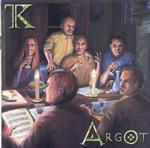

Home Artist links

Thieves' Kitchen - Argot
| Artist: | Thieves' Kitchen |
| Title: | Argot |
| Label: | self produced TKCD002 |
| Length(s): | 64 minutes |
| Year(s) of release: | 2001 |
| Month of review: | [06/2001] |
Line up
Paul Beecham - woodwind
Simon Boys - vocals
Wolfgang Kindl - keyboards, backing vocals
Phil Mercy - guitars, backing vocals
Mark Robotham - electric drums
Andy Bonham - bass
Tracks
Summary
The boys from the UK are back with an album featuring four mile-long tracks.
The music
We open directly with the longest track. At first I think I am listening to
No. 6 by Present, if we forget about the droning rhythm guitars for a minute.
This is a top-notch opening with plenty of dark driving drama and some menacing
piano playing to boot. Think Anekdoten, think Anglagard (yes, plenty of mellotron),
but more up-beat. The lyrics to the four tracks are in Swdish, Polish, Arabic and Russian respectively,
but do not be afraid: they are still sung in English. In comparison with their
previous disc this is a giant leap forward, with for instance the melodic guitar part
round the four minute mark. Like on their debut the band is not out to compromise,
as the drummer I think once told me, to make something in the U.K. that is not
neo-prog, but this time they also succeed in writing songs that stick, that captivate
and that take the listener by the lapels, shaking him up thoroughly. All members
have a hand in this: the vocalist does not sing very melodically, but in his louder
moments he conveys fear, anxiety and all those not so positive emotions in a
convincing way. Other references beside the already mentioned: a large dose of King
Crimson here, some ELP in the keyboards, but strangely enough the vocal melody
reminds me most of (the verses of) Mr Mister's Kyrie. I admit that that's weird.
The keyboards of Kindl are strongly varied on this track: large doses of organ,
mellotron, but also piano and Emersonian excursions are taking place right here.
Robotham and Bonham make up the rhythm section, with the latter making some nicely
zooming additions to the sound spectrum. Robotham puts a lot of adversity in the
track in the middle part as he interacts with keyboards and guitar. This part I
think takes a bit too long. Around the thirteen minute mark the pace comes back in.
The guitar work is rather in the jazzrock vein and is best appreciated by people
who enjoy is. I preferred his more melodic solo in the beginning. Because of the
jazzrock influences, one might be tempted to think of Finneus Gauge, but with
very different vocals. The piano right after playing its question and answer game
with the guitar also has a jazzy feel. Around the 17 minute mark the vocals
return with powerful organ playing in the back and strong chords on the guitar.
A good finale.
Phew, quite a paragraph there. The second track then. Escape opens with church
organ. This is a much slower track with staccato drumming by Robotham, alternated
with rather relaxed, but disjointed drumming. The prominent feeling this track
is one of jazziness and ponderousness. The vocal melody falls a bit short, but
at times there is something to it. The repetitive short notes on the guitar irritate
me a bit. I prefer the sound of the bass, which is rather prominent at times.
When the pace finally comes in a bit, and the ELPish keys enter the picture the music
becomes more interesting. One is tempted to think of the more complex bands here as
well.
The third track combines more or less what happened on the first two tracks. I do
miss a bit the menacing aspects of the first track, have been missing these since
that first track, because to me the music is now more jazzrock than anything else.
Not the easiest kind of jazzrock and there are plenty of nonjazzrock aspects as well,
but the meandering of the guitar, the laid back keyboards and piano all give rise
to this idea. The rhythm guitar part is actually rather playful, with some oboe
thrown in for good measure.
The opening of Call To whoever is again much to my liking because of its grand
sounding melody. After the vocal part the music winds down a bit, become more sparse.
The bass player bounces around nicely and some marimba like keyboards add to the
atmosphere. There is even some melodic acoustic guitar here, accompanied by the oboe
again. Plenty of meandering guitar in the middle, but like the first track a good
track ending on an optimistic note.
Conclusion
To me there are two really good tracks on this disc and two that are okay, but
are maybe a bit too free form, too jazzy, too much lacking in interesting melodic
material without compensating for it in some way, like having a nice atmosphere.
References for Thieves Kitchen are King Crimson with plenty of meandering electric
guitar, plenty of mellotron, organ and basically all the ingredients we have come to
expect on a pure progressive record with strong technical prowess. Quite a step up
from their debut, too bad about the second and third track not being much to
my tastes.
© Jurriaan Hage